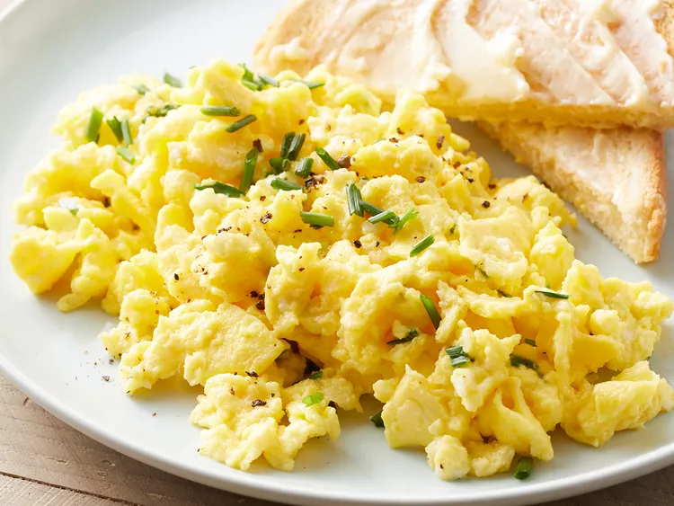

Scrambled Eggs


Creamy and tender scrambled eggs that are quick to prepare and full of flavor. This simple dish is a breakfast staple and can be customized to your liking. When cooked gently, the eggs become soft and rich, making them a perfect option for a warm, satisfying start to your day.
Serves 4
Prep time: 5 minutes
Cook time: 5 minutes
Difficulty: Very Easy